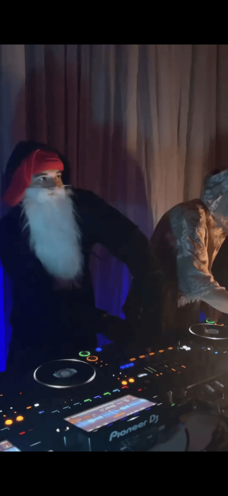
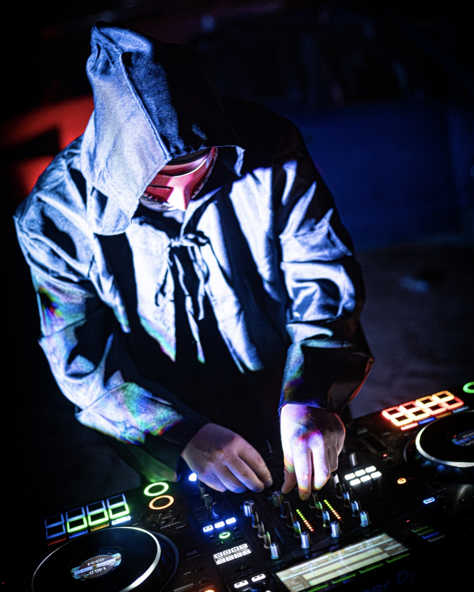
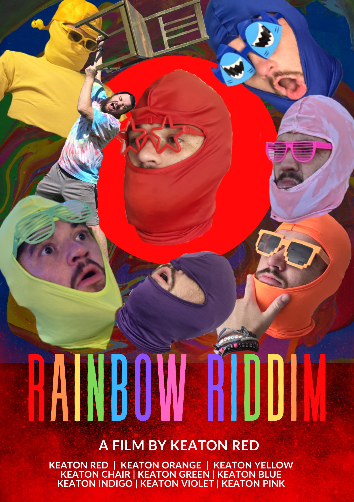
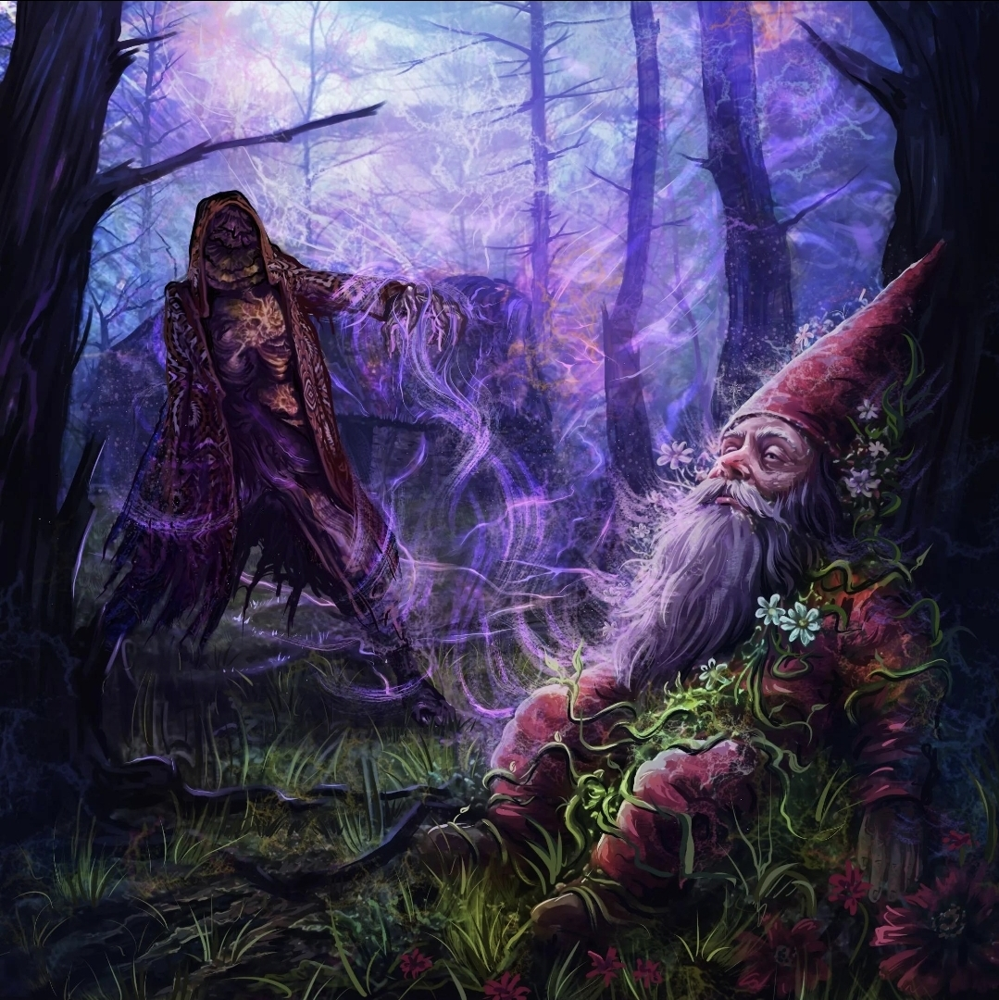
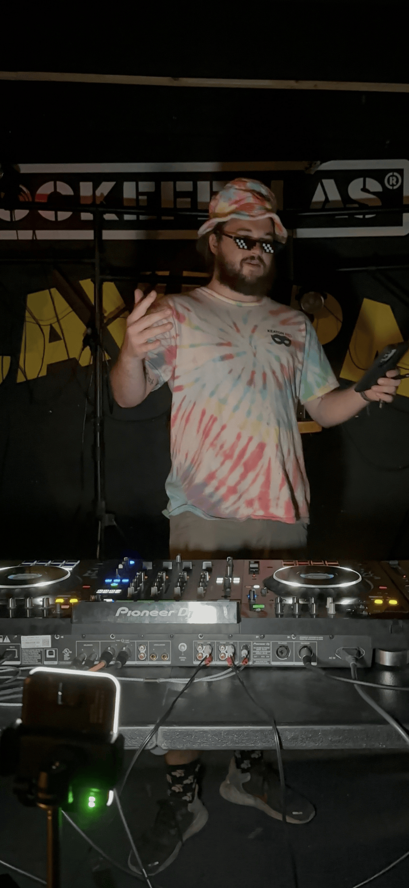
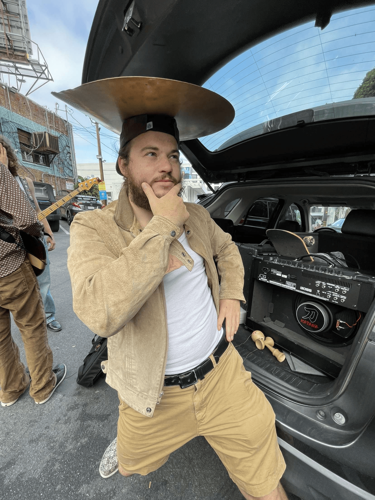
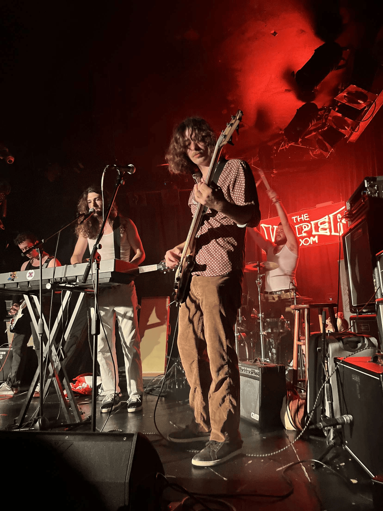

Keaton Red
Currently based in Long Beach, CA, but originally hailing from Bend OR, Keaton Red is an enigmatic force rising up in the LA dubstep underground. While his bread and butter is a bouncy OG riddim flow, surprises are not uncommon when Keaton gets behind the decks. His sets are known to include heavy-hitting doubles, multiple outfit changes, and an occasional detour into drum-and-bass territory. As one of the only gnomes in the scene, he brings a unique zest to each individual performance.



While still honing his sound, movie references are prevalent in his independently-produced music. His self-released album Rainbow Riddim (2024) samples films such as Austin Powers, Wall-E, and Lord of the Rings. Furthermore, his most recent release, Annihilation, is a collaboration with Kale that samples a movie of the same title!



Outside of DJing, Keaton is also the drummer of post-punk indie surf-rock band Sports Medicine!



Contact
Email: keatonred@yahoo.com --- Email or DM for bookings!